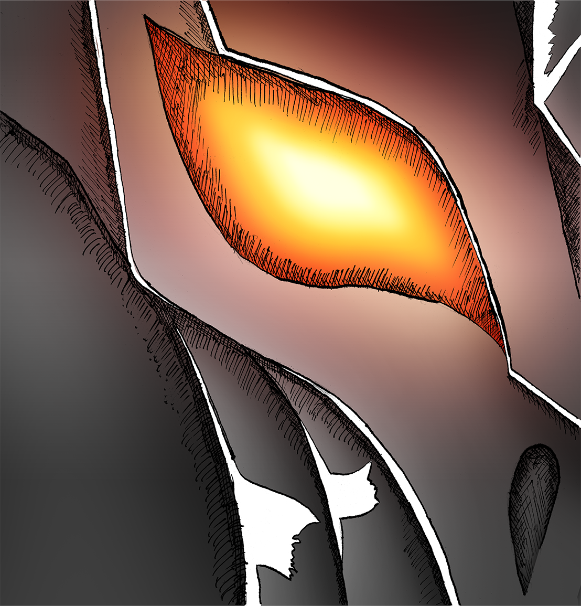

This illustration is of Sauron’s helm, as seen in
The Lord of the Rings The
Fellowship of the Ring. For reference, I used the new LEGO minifugure from
the Barad-Dur set, which can be seen on the page above. A practical use of
the image would be as a book cover ot similar marketing purpose.
This illustration was done using an F pencil and was inked with a traditional
dip pen. Due to the analog nature of this illustration, it could be scanned in
at a greater size than I originally drew it. For reference, I drew this image as
an 8x8” illustration, and then scanned it in at 1200ppi, which lets me scale it
up to 32x32” before I drop below an acceptable resolution to print with.
Once scanned, I brought the resulting high-resolution image into Photoshop and used
masks and solid colour layers to block in the colour. I then went over some sections again
on standard layers to paint in highlights, shadows, and other lighting effects. Lastly, I
used a combination of three layers set to add themselves to both each other and the main
illustration to paint in the bloom around the eye, selling the idea that they are glowing